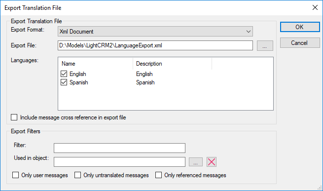

By selecting in the main GeneXus Menu: Tools > Translations > Export Translations File, the following dialog will be opened to allow the export of the Language object(s) to be translated.  OptionsExport Format
Export Translation File: Is the name of the distribution file suggested by GeneXus is LanguageExport.xml, that can be changed. You can also specify a path directory to store the export file; otherwise, it is generated in the KB directory by default. Languages: Displays the language objects to be distributed. You will be able to configure other languages by means of check boxes. The presence of languages within the list depends on the languages contained in the KB. Include message cross-references in export file: Allows inclusion of text cross-references in the export file. Filter: To apply filters to the messages list before exporting Used in Object: To export only the messages referenced by an object Only user messages: If marked, no system messages are exported Only untranslated messages: If not marked, already translated messages are also exported Only referenced messages: If not marked, also messages that are not referenced by any object, possibly old unused messages, are also exported About the content of the generate fileWhen the Export Format is Xml document, one file with all selected Languages is generated When the Export Format is Xml Localization Interchange File Format (XLIFF), then one file per selected Language is generated See AlsoApplication Localization
|
| Backlinks |
| Import Translations File |